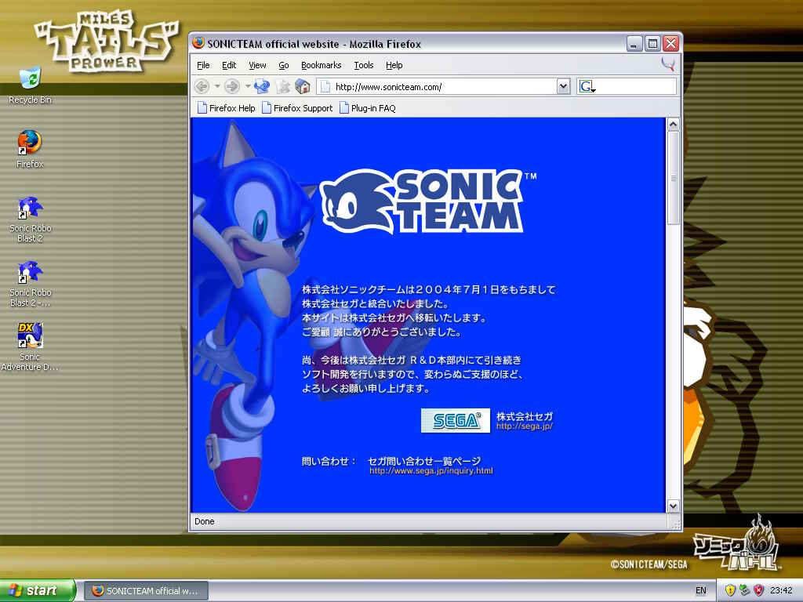

|
Image |
Specs |
Ichi-Tails |
|
- CPU: Intel 80286 @ 16MHz
- Hard Drive: 80MB SCSI HDD
- Memory: 4MB
- External Storage: One 3.5" 1.44MB floppy
- Display: 256KB VRAM, 640x480 @ 16
- Sound: Sound Blaster 1.5
- Operating System: DOS 3.30 + Windows 3.00, upgraded to Windows 3.00a, upgraded to Windows 3.1
|
Ni-Tails |
|
- CPU: Intel 386DX @ 16MHz
- Hard Drive: 80MB SCSI HDD
- Memory: 4MB
- External Storage: One 3.5" 1.44MB floppy
- Display: 512KB VRAM, 640x480 @ 256
- Sound: Sound Blaster 16
- Operating System: DOS 5.0 + Windows 3.00a, upgraded to Windows 3.1
|
San-Tails |
|
- CPU: Intel Pentium @ 75MHz
- Hard Drive: 500MB IDE HDD
- Memory: 8MB
- External Storage: One 3.5" 1.44MB floppy + One 4X CD-ROM
- Display: 1MB VRAM, 800x600 @ 256
- Sound: Sound Blaster AWE32
- Operating System: DOS 6.22 + Windows 3.1, upgraded to Windows 95
|
Yon-Tails |
|
- CPU: Intel Pentium II Klamath @ 233MHz
- Hard Drive: 4GB EIDE HDD
- Memory: 32MB
- External Storage: One 24X CD-ROM
- Display: ATI Rage IIc, 2MB VRAM, 1024x768 @ 16,777,216
- Sound: Sound Blaster AWE32
- Operating System: Windows 98, upgraded to Windows 98 SE, upgraded to Windows Me
|
Go-Tails |
 |
- CPU: Intel Pentium III Coppermine T @ 800MHz
- Hard Drive: 60GB Ultra ATA HDD
- Memory: 256MB
- External Storage: One DVD-R/DVD/CD-R/CD-RW/CD-ROM Combo (2X/6X/8X/4X/24X) drive
- Display: Nvidia GeForce2 MX, 32MB VRAM, 1024x768 @ 16,777,216
- Sound: Yes
- Operating System: Windows XP, upgraded to Windows XP SP1, upgraded to Windows XP SP2
|